📍 Portfolio Status: Actively Updated
This portfolio documents my ongoing research journey. I update it regularly as I complete milestones, publish results, and achieve new goals.
Last Updated: March 2026
Welcome
I'm Tuğba Yalvaç Mohammed, a robotics researcher and full-stack developer focused on making AI-supported learning accessible in under-resourced educational settings.
I design low-cost educational robotics systems that integrate embedded hardware, AI capabilities, and evidence-based pedagogy. My work explores how careful engineering and instructional design can deliver learning outcomes comparable to expensive commercial tools.
Research Pipeline: In addition to WALDEN, I am developing TaleBot, an AI-based storytelling robot for creative writing (Final Year Project), and planning EcoSort Edu, a computer-vision-based waste-sorting robot for environmental education, targeted for graduate-level research.
Long-term Goal: To pursue a PhD in Human–Robot Interaction or Educational Technology, with a focus on scaling affordable educational robotics to advance global educational equity.
I am currently a 6th-semester BCA (Bachelor of Computer Applications) student at Manipal University Jaipur (Online), with an expected graduation in September 2026. Alongside my studies, I conduct independent research in affordable educational technology. I have completed coursework in full-stack web development and Arduino-based robotics. My 4th-semester performance was 8.7 SGPA (overall CGPA: 3.58/4.0).
📄 Conference Publication
IEEE ISEC 2026 — "WALDEN: Low-Cost AI-Enhanced Educational Robot"
✅ Accepted for presentation — March 14, 2026, Princeton, NJ
✅ To be published in IEEE Xplore
Pilot study (n=12): 92% student preference over tablets, 100% content filtering success, $50 hardware cost.
Previous submission: AISTEMEDU 2025 (IEEE) — Reviewer scores: Originality & Novelty (4–5/5), Technical Merit (4–5/5), Applicability (4–5/5). Expanded study designed based on reviewer recommendations.
Current Research Focus: WALDEN Robot
I am conducting a within-subjects quasi-experimental study examining whether a character-based, low-cost AI learning assistant (approximately $50 in hardware and $2.65 per student per year) can produce measurable learning gains in government school classrooms. WALDEN is physically inspired by the Disney character WALL-E through 3D-printed design, using familiar character aesthetics to reduce anxiety and create a friendly "buddy" dynamic — particularly for young children.
📊 Research Status — March 2026
- ✅ Pilot study completed (September 2025, n=12)
- ✅ IEEE ISEC 2026 accepted (March 14, Princeton)
- ✅ School partnership secured (3 government schools, Hyderabad)
- ✅ All research instruments finalized and piloted
- ⏳ Institutional IRB approval in progress
- 📅 Full study planned: n=280 students, ages 6–13, Grades 1–8
My Mission
Educational opportunity should not depend on a school's financial capacity. Through cost-aware design and responsible engineering, I aim to develop AI-enhanced learning tools that are affordable, scalable, and practical for real classrooms.
Looking For
- PhD supervisors in educational robotics, HCI, or learning sciences
- Research collaborations focused on accessible educational technology
- Schools interested in piloting low-cost AI-based learning systems
- Conversations with people committed to educational equity
Values
I believe effective educational technology should be:
- Affordable enough for wide adoption
- Effective enough to demonstrate measurable learning impact
- Safe and appropriate for independent student use
- Open to adaptation by global educational communities
Connect With Me
GitHub: github.com/tubayalvacc
LinkedIn: linkedin.com/in/tubayalvacmohammed
YouTube: youtube.com/@tuba_codes
Technical Skills
🔬 Research Methodology & Analysis (Primary Expertise)
Experimental Design
- Quasi-experimental studies, pre/post/retention testing
- Mixed methods research design
- IRB protocols and research ethics compliance
- Survey design and educational assessment development li>Formal Training: Specialization in Research Methods and Statistics in Social Science, University of Amsterdam (Coursera, Jan-Apr 2026, In Progress)
Statistical Analysis
- Inferential statistics: T-tests, Mann-Whitney U, Chi-square
- Effect size calculations: Cohen's d
- Data analysis tools: Python (pandas, scipy, statsmodels), Excel advanced functions
Academic Communication
- Research paper writing (IEEE conference format)
- Systematic literature review methodology
- LaTeX formatting and citation management
- Conference presentation skills
🤖 Robotics & Embedded Systems
Hardware Development
- Microcontrollers: Arduino (C/C++), ESP32, ESP32-CAM
- Sensors: Integration and calibration (various types)
- Motor control: Servo mechanisms, sensor arrays
- 3D modeling: Custom hardware enclosures
System Integration
- WiFi-enabled IoT systems
- Sensor array integration
- Motor control systems
- Hardware prototyping
💻 Full-Stack Web Development
Frontend
- Core: HTML5, CSS3, JavaScript
Backend
- Languages: PHP (Core)
- Databases: MySQL
- APIs: RESTful API development and integration
- Security: Session management and authentication systems
Development Tools
- Version control: Git, GitHub
- API testing: Postman
🤖 AI Integration & Educational Systems
AI Implementation
- Cloud AI APIs: Claude (Anthropic), OpenAI
- Natural Language Processing: Voice-based interaction systems
- Prompt engineering for educational contexts
Educational AI Design
- Age-appropriate tutoring systems
- Cost optimization strategies (token management)
- Educational context optimization
👨💻 Programming Languages
Proficient:
- Python (data analysis, automation, scripting)
- C/C++ (Arduino, embedded systems)
- PHP (web backends)
- JavaScript (frontend)
📊 Research Impact Metrics
IEEE (4-5/5 reviewer scores)
2 research projects
200+ students (planned expansion)
$50 robot vs. $5,000+ systems (99% cost reduction)
Featured Projects
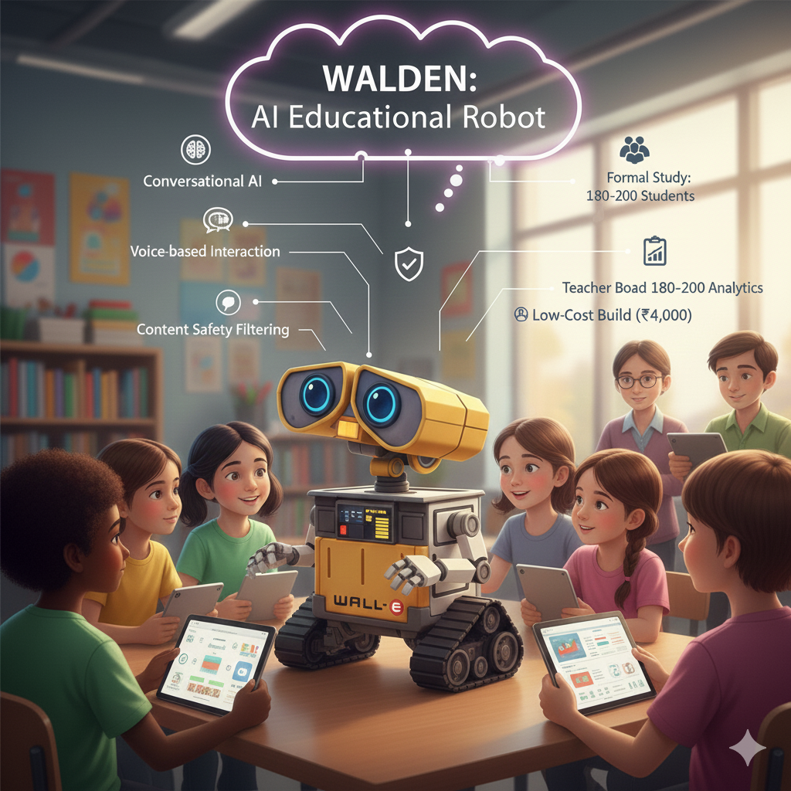
WALDEN: AI-Powered Educational Assistant Robot
A friendly, cinematic robot designed for students, offering digital learning experiences without needing expensive computers or tablets.
Features
- Voice-based interaction for student Q&A
- Speakers for verbal explanations
- Expandable modules for math, science, and environmental learning
Engineering Highlights
- It is suitable for schools
- On-device AI processing for privacy-safe usage
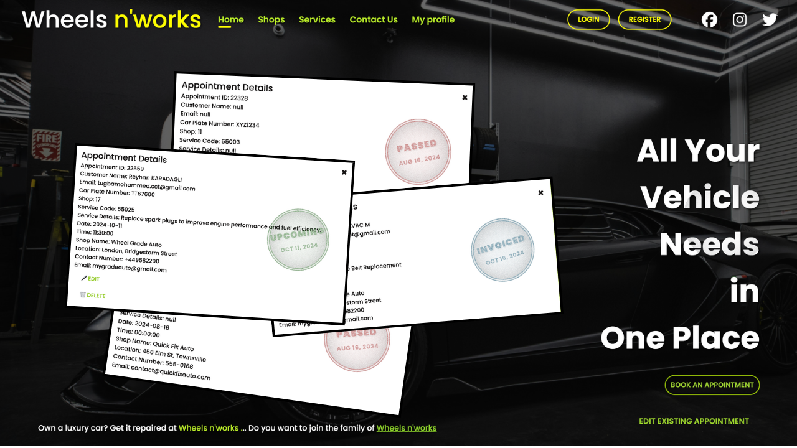
Wheels n' Works – Vehicle Workshop Management System
A web-based management system that automates workshop operations, offering dashboards for customers, shop owners, and super admin with invoicing, approvals, reporting, and email notifications.
System Architecture
- Home Page: Overview of workshops, services, instant booking without signup
- Customer Panel: Registration, profile management, appointment booking
- Guest Booking: Non-customers get auto-generated IDs, email notifications
- Shop Admin: Manage shop info, services, appointments, invoicing
- Super Admin: Full platform control, analytics, shop management
- Email Integration: Automated booking confirmations and invoice delivery
Key Technical Features
- Role-based access control (4 user types)
- Automated invoice generation with PDF export
- Real-time appointment status tracking
- Email notification system
- View-only mode for completed appointments
Project Gallery
Visual documentation of robotics builds and web applications
Robotics Projects
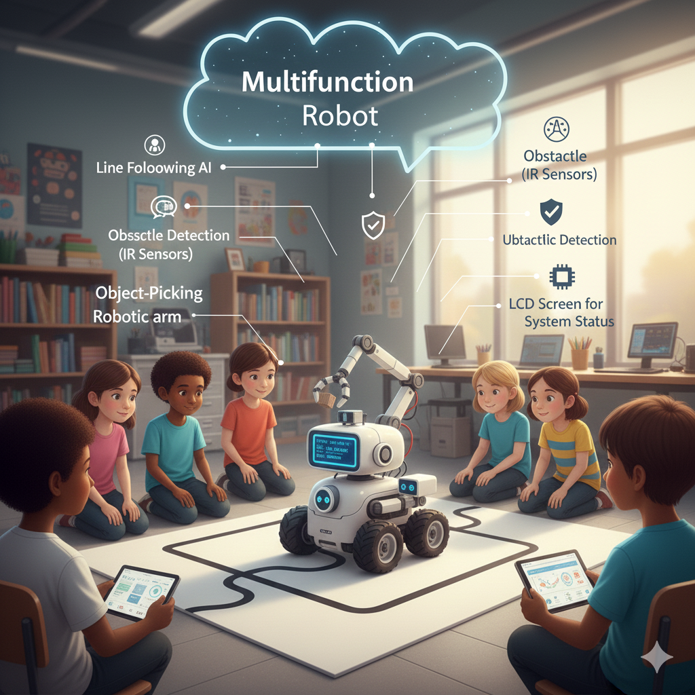
Multifunction Robot
Complete assembly
WALDEN Robot
AI educational assistant
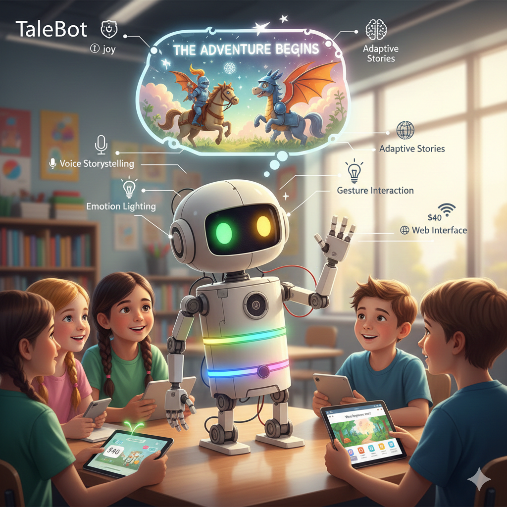
TaleBot
Interactive AI storytelling robot.
FYP in progress (2025 -2026)
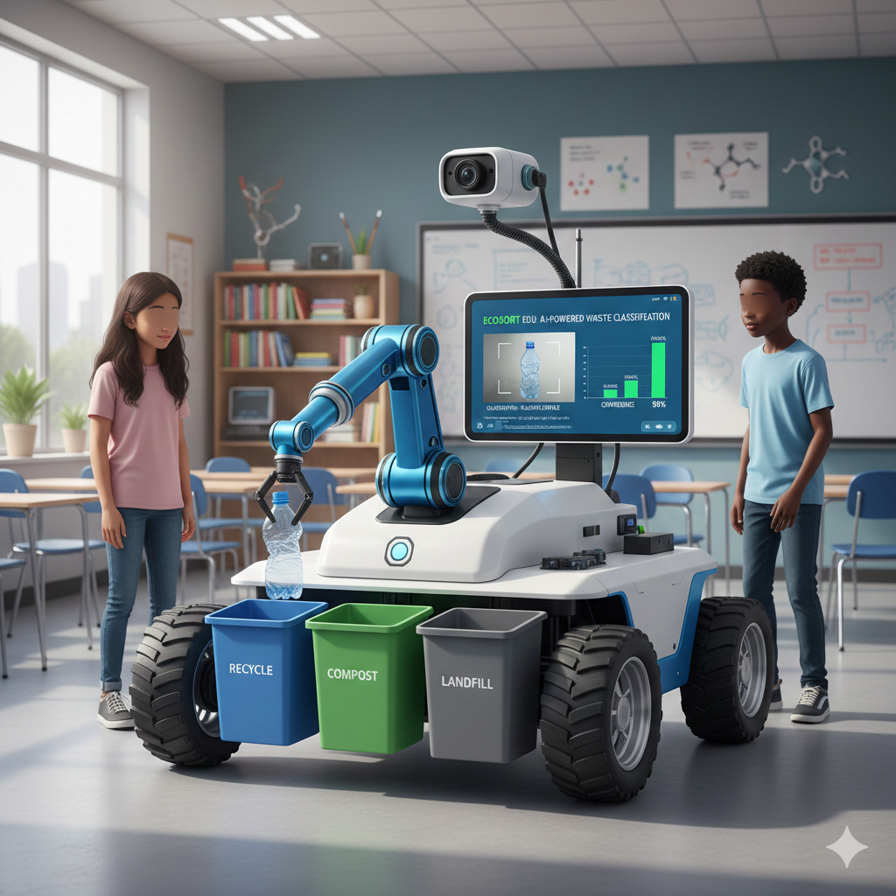
EcoSort Edu
AI-powered waste sorting robot.
Graduate research (Target: 2026+)
Web Applications

Home Page
Wheels n' Works Interface
Landing page with instant booking and service overview
Non-Customer Management System
Guest booking system with automated ID generation
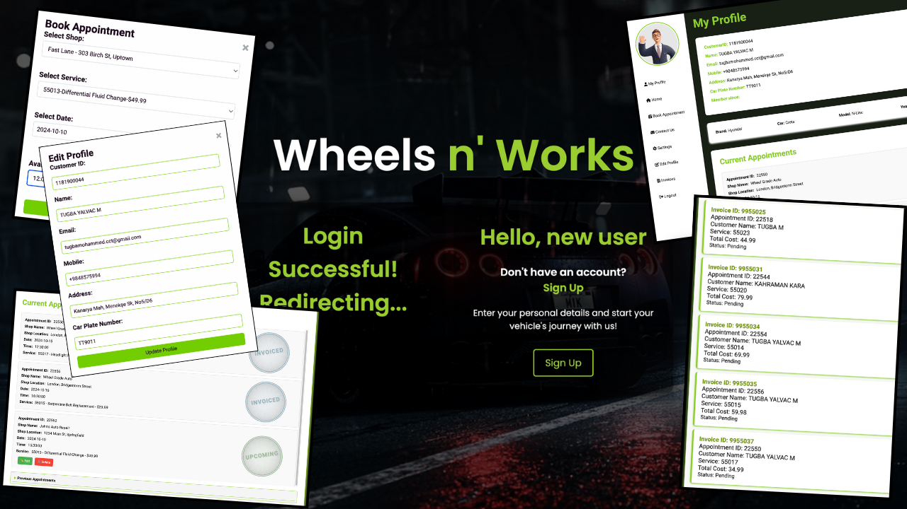
Customer Management System
Profile management, booking, and invoice tracking
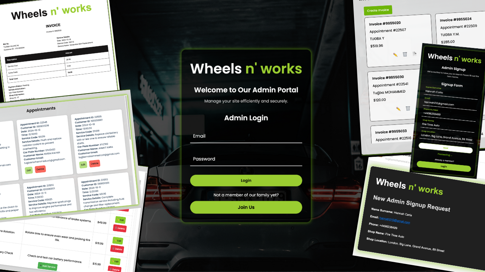
Shop Owners-Admin Management System
Complete workshop operations dashboard
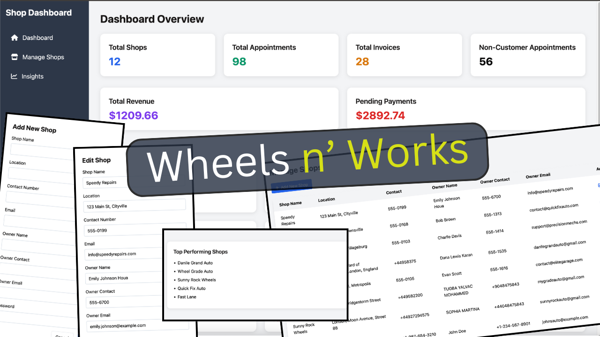
Super Admin Dashboard
Platform analytics and shop management
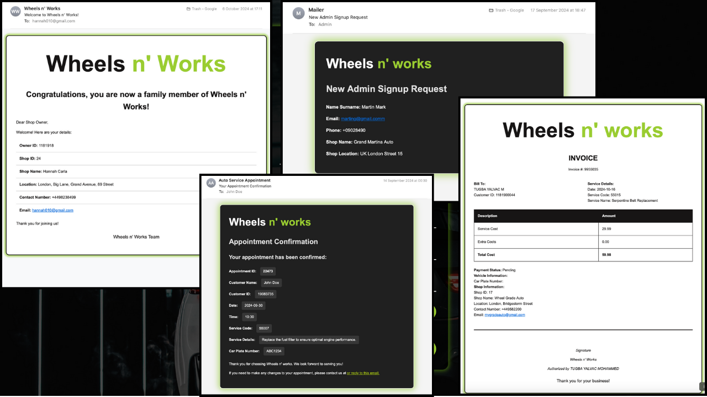
Mail Services
The mails you receive while booking and signing up as admin and invoices of service.
Research Portfolio
Active Research & Projects
Research Problem
Most educational robotics research focuses on expensive systems ($5,000–$30,000) or gives students unrestricted devices. There's limited exploration of affordable, education-restricted AI systems that work alongside teachers.
Innovation
WALDEN provides voice-based AI tutoring at under $5 per student/year (including hardware amortization and AI costs) — over 99% cheaper than commercial alternatives. Physically inspired by the Disney character WALL-E through 3D-printed design, WALDEN uses familiar character aesthetics to reduce anxiety and create a friendly "buddy" dynamic — particularly effective for young children.
Current Status — March 2026
- ✅ Pilot study completed (September 2025, n=12)
- ✅ IEEE ISEC 2026 accepted (March 14, Princeton, NJ)
- ✅ To be published in IEEE Xplore
- ✅ School partnership secured (3 government schools, Hyderabad)
- ✅ Research instruments finalized and piloted
- ⏳ Institutional IRB approval in progress
- 📅 Full study: n=280 students, ages 6–13, Grades 1–8
❓ Research Questions
RQ1: Immediate Learning Gains (Primary) What is the magnitude of immediate learning gains (effect size, Cohen's d) produced by WALDEN robot interactions across four consecutive daily sessions, measured through paired pre/post knowledge tests in elementary students (Grades 1-8, ages 6-13) in government schools?
RQ2: Knowledge Retention Do students demonstrate retention of learned content one week post-intervention, and what is the decay rate (percentage retention) compared to immediate post-test scores, analyzed by age cohort (Ages 6-8, 9-13)?
RQ3: Age-Cohort Differences Are there statistically significant differences in learning gains and retention rates across two age cohorts (Ages 6-8, 9-13), as measured through Mann-Whitney U tests and ANOVA?
RQ4: Engagement & Preference What percentage of students report preferring WALDEN interactions over their prior tablet-based learning experiences, based on self-report survey responses, and how does stated preference correlate with measured learning gains?
RQ5: Cost-Effectiveness What is the cost per measurable learning gain (dollars per effect size unit) for WALDEN compared to commercial educational robots (NAO, Pepper), and what is the scalability potential for government school adoption?
RQ6: Teacher Perspectives What are teachers' assessments of WALDEN's classroom feasibility, student engagement impact, and pedagogical value based on structured observation forms across 32 sessions?
RQ7: Session-by-Session Learning Trajectory Do students demonstrate cumulative learning gains across four consecutive sessions, or do learning effects plateau after initial sessions? What is the optimal intervention duration?
📄 Conference Publication
Venue: IEEE ISEC 2026 — International Symposium on Educational Computing
Status: ✅ Accepted for presentation — March 14, 2026, Princeton, NJ · To be published in IEEE Xplore
Pilot Study: n=12 students, measuring engagement, digital safety, and system usability
Key Results:
- ✅ 92% student preference over tablet-based learning (11/12 students)
- ✅ 100% content filtering success (15/15 non-educational queries redirected)
- ✅ 85% technical reliability (end-to-end interaction success)
- ✅ $0.00441 cost per interaction (~2,260 questions per $10 budget)
Earlier submission: AISTEMEDU 2025 (IEEE) — Reviewer scores: Originality & Novelty (4–5/5), Technical Merit (4–5/5), Applicability (4–5/5). Expanded study designed based on reviewer recommendations.
Expanded Study Design
- Sample: 280 students (ages 6–13, Grades 1–8) across 3 government schools
- Duration: 4-day intervention + 1-week retention testing
- Measurements: Pre/post/retention MCQ tests (10 questions per cohort)
- Design: Within-subjects quasi-experimental, two age cohorts (6-8 years, 9-13 years)
- Additional Data: Engagement surveys, teacher feedback, system logs
Session Structure (per day — 45 minutes)
- Pre-test (10 min): Curriculum-aligned MCQ assessment
- WALDEN interaction (15 min): Student-led educational queries
- Teacher-guided discussion (10 min): Concept reinforcement
- Post-test (10 min): Immediate learning gain measurement
- Retention test (1 week later): Knowledge retention assessment
Measures
Quantitative:
- Learning assessments: Pre/post/retention tests (10 questions per cohort)
- Student surveys: 8-item engagement scale (ages 6-8), 17-item engagement scale (ages 9-13)
- Technical metrics: Speech recognition accuracy, interaction success rates, cost per interaction
Qualitative:
- Teacher observation forms (structured, after each session)
- Teacher evaluation survey (comprehensive, after Day 4)
Cost Breakdown
- Hardware: ~$50 per robot
- AI Costs: under $2.50 per student/year (based on pilot usage patterns)
- Infrastructure: Uses existing school WiFi (no additional costs)
- Total: under $5 per student/year vs. $5,000+ for commercial robots
🏷️ Keywords
📊 Data Analysis Plan
Quantitative Analysis
- Paired t-tests: Pre/post score comparisons within each session
- Repeated measures ANOVA: Learning trajectory across 4 sessions
- Cohen's d: Effect size calculations for learning gains
- Mann-Whitney U tests: Age-cohort comparisons (Ages 6-8, 9-13)
- Retention analysis: Post-test vs. retention-test score decay
- Correlation analysis: Engagement ratings vs. learning gains
Qualitative Analysis
- Teacher observation themes: Common patterns in student behaviors
- Open-ended survey responses: Thematic coding of teacher feedback
- Implementation barriers: Frequency analysis of reported challenges
- Success factors: Features teachers identified as most effective
Mixed Methods Integration
- Triangulation: Student performance data + student surveys + teacher observations
- Validation: Do teacher-observed engagement levels correlate with measured learning gains?
- Contextual factors: How do teacher reports explain outlier student performances?
🎯 Gap Analysis
Problem: Text AI lacks engagement, expensive robots ($500+) lack creative writing focus.
Hypothesis: Students using TaleBot will demonstrate statistically significant improvements in creative confidence, story structure complexity, and vocabulary diversity compared to traditional writing instruction methods.
⚙️ Project Status
Type: Final Year Project (FYP)
Stage: System design & development phase
Timeline: 2026
Research Status: Experimental study planned for implementation
📋 Planned Experimental Study
Sample Size: 50-75 students (elementary school, ages 5-8)
Teacher Participants: Classroom teachers (observational and feedback data)
Study Design: Pre-intervention / Post-intervention comparative analysis per session
Duration: 2 weeks (4 sessions total)
Session Schedule: 2 sessions per week, each using 2 consecutive class periods (~80-90 minutes)
Total Classroom Time: 8 class periods across 2 weeks
Research Approach: Mixed methods (quantitative + qualitative analysis + observational data)
📅 Session Breakdown
Week 1, Session 1 (Day 1):
- Introduction to TaleBot
- Pre-writing: Students write story from TaleBot library prompt (own imagination)
- TaleBot interaction: AI-assisted storytelling guidance
- Teacher-student discussion about the story experience
- Post-writing: Students write story on same topic again
- Student engagement survey (first session feedback)
- Teacher observation form completed
Week 1, Session 2 (Day 2):
- Pre-writing: New story prompt from TaleBot library
- TaleBot interaction: AI-assisted storytelling guidance
- Teacher-student discussion about the story
- Post-writing: Students write story on same topic again
- Teacher observation form completed
Week 2, Session 3 (Day 3):
- Pre-writing: New story prompt from TaleBot library
- TaleBot interaction: AI-assisted storytelling guidance
- Teacher-student discussion about the story
- Post-writing: Students write story on same topic again
- Teacher observation form completed
Week 2, Session 4 (Day 4 - Final Session):
- Pre-writing: New story prompt from TaleBot library
- TaleBot interaction: AI-assisted storytelling guidance
- Teacher-student discussion about the story
- Post-writing: Students write story on same topic again
- Final student engagement survey (overall experience feedback)
- Teacher observation form completed
- Final teacher feedback survey
👨🏫 Teacher Data Collection
📋 Teacher Observation Forms
Frequency: Completed after each session (4 forms total per teacher)
Focus Areas:
- Student engagement levels during TaleBot interaction
- Quality of student-TaleBot interactions
- Student participation in discussions
- Technical issues or challenges
- Notable student reactions or behaviors
- Classroom management observations
📝 Teacher Feedback Survey
Frequency: One comprehensive survey at end of Session 4
Focus Areas:
- Overall effectiveness of TaleBot for creative writing
- Perceived impact on student writing quality
- Ease of integration into classroom activities
- Technical usability and reliability
- Would they use TaleBot again?
- Suggestions for improvement
- Comparison to traditional writing instruction
📋 Student Engagement Survey
Administered: Session 1 (initial reactions) and Session 4 (final feedback)
Focus Areas:
- Did children enjoy using TaleBot?
- How did they feel about writing stories with the robot?
- Did TaleBot help them think of new ideas?
- Would they like to use TaleBot again?
- What did they like most/least about the experience?
- Did writing become more fun with TaleBot?
Age-appropriate survey design with visual scales (emoji ratings, simple questions)
📊 Planned Measurement Methods
Quantitative Analysis
- Word Count: Total words per story (pre vs. post, across 4 sessions)
- Vocabulary Richness: Unique words, lexical diversity metrics
- Sentence Complexity: Average sentence length, compound sentences
- Story Length: Paragraph count, overall composition length
- Grammar Accuracy: Error rate analysis
- Improvement Trends: Session-by-session progress tracking
Qualitative Analysis
- Narrative Structure: Beginning, middle, end coherence
- Creative Elements: Originality, imagination, plot development
- Character Development: Depth and consistency of characters
- Descriptive Language: Use of adjectives, sensory details
- Emotional Expression: Engagement and emotional depth
- Teacher Observations: Behavioral and engagement patterns
🔬 Statistical Analysis Plan
- Paired t-tests (comparing pre/post writing samples across 4 sessions)
- Effect size calculations (Cohen's d for writing quality improvements)
- Repeated measures analysis (tracking improvement trends over time)
- Survey response analysis (student engagement and teacher feedback metrics)
- Rubric-based scoring (creativity, structure, vocabulary)
- Correlation analysis (teacher observations vs. student performance)
📝 Complete Data Collection
- Student Writing Samples: 8 samples per student (4 pre-writing + 4 post-writing)
- Student Surveys: 2 surveys per student (Session 1 + Session 4)
- Teacher Observation Forms: 4 forms per teacher (one per session)
- Teacher Feedback Survey: 1 comprehensive survey per teacher (end of study)
- Triangulated Analysis: Student performance + student feedback + teacher observations
❓ Research Questions
RQ1: Learning Outcomes (Primary) What is the effect size (Cohen's d) of TaleBot-assisted storytelling on elementary students' (ages 7-11) creative writing quality compared to baseline writing, measured across four dimensions: (a) word count, (b) vocabulary richness (unique words/total words), (c) sentence complexity (average words per sentence), and (d) narrative structure coherence (rubric-scored)?
RQ2: Engagement & Motivation To what extent does interaction with TaleBot influence students' self-reported writing motivation and enjoyment, measured through pre/post surveys using age-appropriate Likert scales, compared to their baseline attitudes toward traditional writing instruction?
RQ3: Temporal Learning Pattern Do students demonstrate progressive improvement across four consecutive TaleBot-assisted writing sessions, and what is the trajectory of learning gains (linear, logarithmic, or plateauing) when measured session-by-session?
RQ4: Teacher Perspectives What are elementary teachers' perceptions of TaleBot's pedagogical effectiveness, classroom integration feasibility, and impact on student writing behaviors, as measured through structured observation forms and post-intervention surveys?
RQ5: Human-Robot Interaction Design Which specific HRI design features of TaleBot (voice interaction, character design, prompt scaffolding, immediate feedback) do students and teachers identify as most effective for supporting creative writing, based on qualitative feedback analysis?
🎨 System Features
- Voice-interactive storytelling prompts
- AI-powered story suggestions and feedback
- Web-based writing platform integration
- Real-time creativity encouragement
- Character-driven engagement (robot personality)
🏷️ Keywords
⚙️ Project Status
Type: Planned Graduate Research
Stage: Conceptual design phase
Timeline: Target start 2026+ (upon graduate program admission)
Prerequisites: Requires graduate-level resources and institutional support
📋 System Overview
4-Phase Learning: Data Collection → Training → Testing → Application
Target: Ages 10-16
Focus: Environmental science + AI literacy
Documentation: A 32-page MS/PhD-level research proposal has been drafted and is in final revision.
❓ Research Questions
RQ1: Learning Effectiveness How does hands-on interaction with EcoSort Edu's dual-mode system affect students' conceptual understanding of AI/machine learning and environmental science compared to traditional instruction methods?
RQ2: Behavioral Impact To what extent does participation in the EcoSort Edu program—including witnessing autonomous deployment—influence students' waste-sorting behaviors and environmental attitudes in and beyond the classroom?
RQ3: Pedagogical Design What specific design features of the learning-to-deployment workflow contribute most significantly to learning outcomes and student engagement?
RQ4:Autonomous Mode Impact How does witnessing the autonomous cafeteria deployment affect students' (a) understanding of AI's real-world applications, (b) self-efficacy ("my learning matters"), and (c) career interest in STEM fields?
RQ5:Implementation Factors What are the key facilitators and barriers to implementing EcoSort Edu in government schools from teachers' perspectives, and what support structures are needed?
RQ6:AI Literacy Development Can students develop sophisticated understanding of AI concepts (training data quality, accuracy metrics, bias, limitations) through non-programming-based interaction with the system?
RQ7: Transfer of Learning Do students recognize their classroom training data being applied in the autonomous system, and how does this recognition affect their perception of learning's real-world relevance?
🏷️ Keywords
📚 Research Focus
Systematic analysis of educational robotics, identifying gaps in accessibility and cost-effective solutions for developing regions.
✅ Status
Completed 2025
Established the foundation for all subsequent research projects.
🔍 Critical Gap Identified
Problem: Most existing research focuses on high-cost, laboratory-based social robots (e.g., NAO robots costing $5,000+). These systems are impractical for everyday classrooms and often attempt to replace the teacher, which can negatively influence students’ emotional engagement, reduce social interaction, and disrupt their sense of safety—particularly for students who are introverted or socially anxious.
Gap: There is limited research on low-cost, emotionally engaging, student-friendly educational robots that support teachers, maintain a safe classroom environment, and promote positive affective connections without replacing human interaction.
Solution direction: Develop an educational robot that integrates affordability, affective interaction, and pedagogical effectiveness — a cute, classroom-friendly assistant designed to enhance teacher–student engagement while preserving emotional safety and comfort.
📊 Key Findings
- Robotics improves engagement and cognitive skills
- Evidence supports measurable learning outcomes
- High costs limit adoption in real classrooms
- Strong need for affordable alternatives
🏷️ Keywords
Professional Experience
Independent Robotics Researcher
Self-Directed Research
WALDEN AI Powered Assistant Robot
Conducting independent research on low-cost educational robotics systems for government schools.
Key Contributions:
- Conducted systematic literature review of educational robotics research
- Designed and built WALDEN robot prototype (~$50 hardware cost)
- Executed pilot study with 12 students measuring engagement and usability
- Submitted research to IEEE conference (AISTEMEDU 2025)
- Secured school partnership for expanded research study (n=200)
- Developed research instruments (surveys, tests, teacher feedback forms)
- Prepared IRB application for ethical research approval
Full-Stack Web Development Intern
Tech Company / Calanjiyam Consultancies Technology
Wheels n' Works WebApp
Completed an intensive 10-week full-stack development internship, designing and developing Wheels n' Works, a comprehensive vehicle repair workshop management system from concept to deployment.
Key Responsibilities & Achievements:
- Architected multi-user web application with three role-based dashboards
- Built responsive front-end using HTML5, CSS3, and JavaScript
- Developed back-end logic and database management with PHP and MySQL
- Designed and implemented RESTful APIs for data communication
- Created secure authentication and session management systems
- Implemented CRUD operations for appointments, repairs, and billing
- Integrated real-time status tracking and notifications
- Managed version control using Git and GitHub
- Conducted API testing with Postman
Impact: Delivered production-ready application that streamlined workshop operations, reduced booking time, and provided comprehensive business analytics.
Get In Touch
I'm Interested In:
- PhD opportunities in Educational Robotics, HCI, or Learning Sciences
- Research collaborations on accessible EdTech
- School partnerships for pilot studies
- Conversations about educational equity and AI ethics
Publications & Presentations
WALDEN: Low-Cost AI-Enhanced Educational Robot
Tuğba Yalvaç Mohammed — Independent Robotics Researcher, Hyderabad, India
Presents the design, pilot validation, and classroom deployment model of WALDEN — a $50 voice-interactive AI educational robot achieving over 99% cost reduction compared to commercial alternatives (NAO, Pepper), with 92% student preference and 100% content filtering success across n=12 pilot participants.
📍 Venue: IEEE ISEC 2026 — International Symposium on Educational Computing
📅 Presentation: March 14, 2026 · Princeton, NJ, USA
📖 Publisher: IEEE Xplore (forthcoming)
📝 Upcoming — Target: September 2026
Co-authored journal manuscript planned following completion of the WALDEN experimental study (n=280). Target venues: IEEE Transactions on Learning Technologies or Computers & Education.
Awards & Recognition
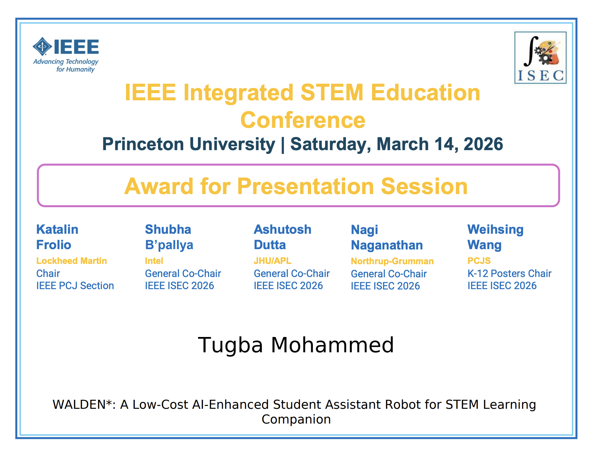
🏆 Award for Presentation Session
IEEE ISEC 2026 — Princeton University
"WALDEN: A Low-Cost AI-Enhanced Student Assistant Robot for STEM Learning Companion"
Recognised at the IEEE Integrated STEM Education Conference 2026 at Princeton University. Signed by chairs from Intel, Lockheed Martin, Northrup-Grumman, and Johns Hopkins University/APL.
March 2026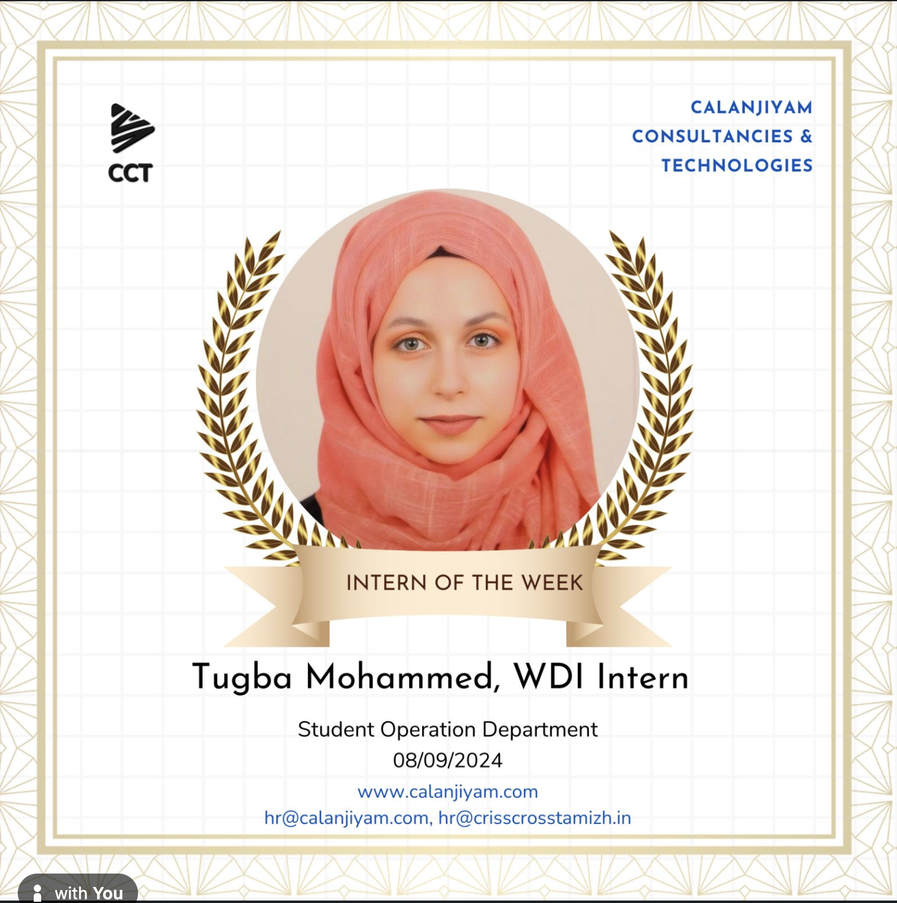
🏆 Intern of the Week
Calanjiyam Consultancies Technology
"Her unwavering commitment towards the completion of the project is inspiring. She went above and beyond to learn new technologies and implemented them in the project and improved the overall UI and UX of the project."
Recognized during the Full-Stack Web Development Internship (WDI JUL24) for exceptional dedication, technical growth, and outstanding contribution to the Wheels n' Works project.
September 2024Letters of Recommendation
Professional and academic recommendations supporting my research and development work
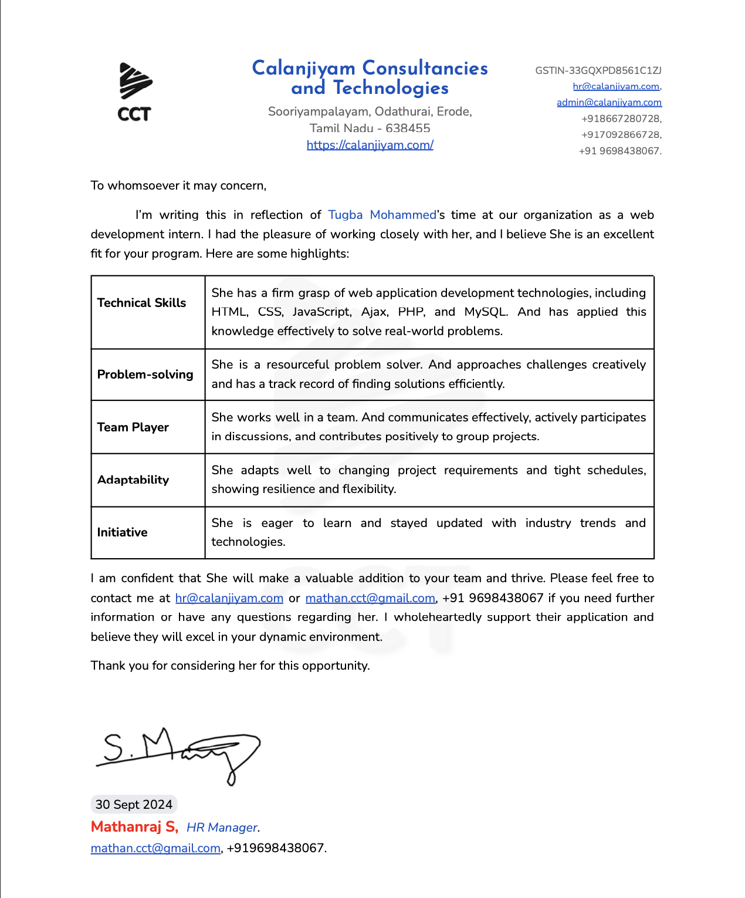
Mr.Karan Darmalingam
Director at Calanjiyam
October 2024Certificates & Achievements
Professional certifications and completed training programs
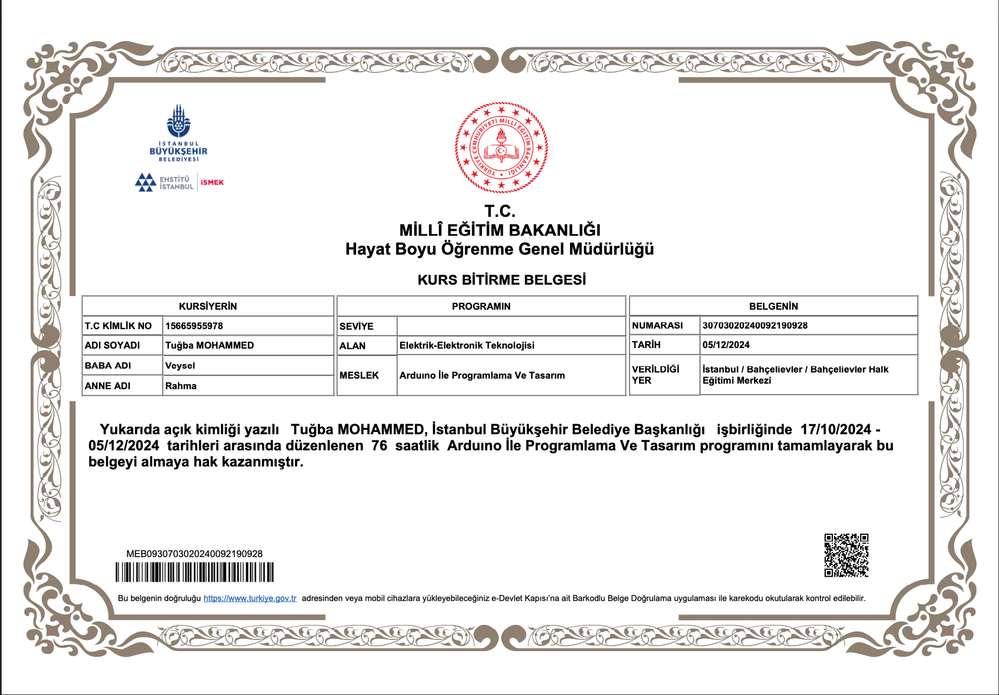
Robotic Coding and Designing with Arduino 101-102
The Institute Istanbul İSMEK (Türkiye)
I have learned the basics of electrical circuits and worked with breadboards, stepper motors, and servo motors. I studied RFID sensors, IR sensors, Bluetooth communication, and keyboard connections. I completed a couple of simple projects using Arduino. I also built a robotic arm for object picking..
October 2024-March 2025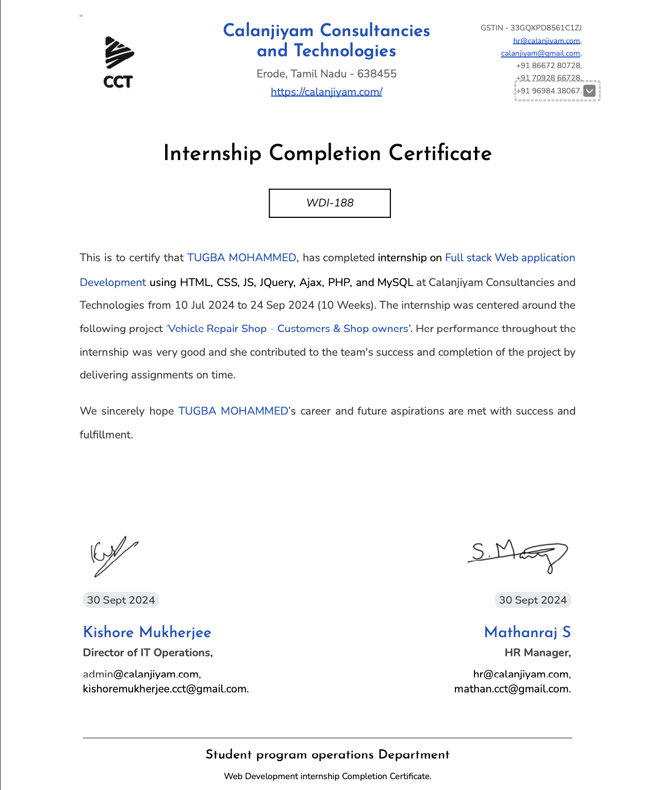
Internship Completion Certificate-Full-Stack Development
Calanjiyam Consultancies
Front End: HTML-CSS-JS
Back End: PHP
DataBase: MySql
CRUD API Operations: PHP
System Intelligence: JS
October 2024
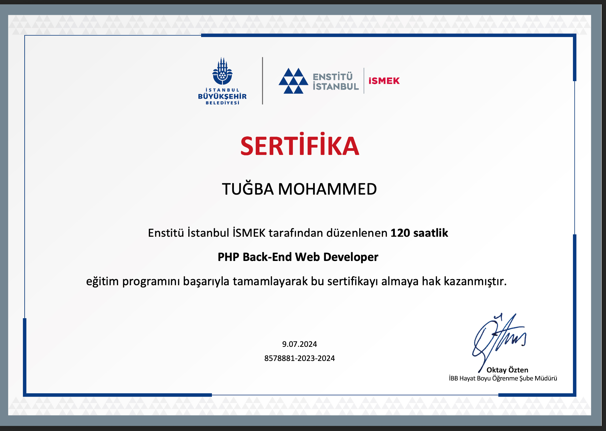
Back End Course with PHP
The Institute Istanbul İSMEK (Türkiye)
Istanbul Vocational Training and Adult Education Program
PHP
HTML
JS
API
09-July-2024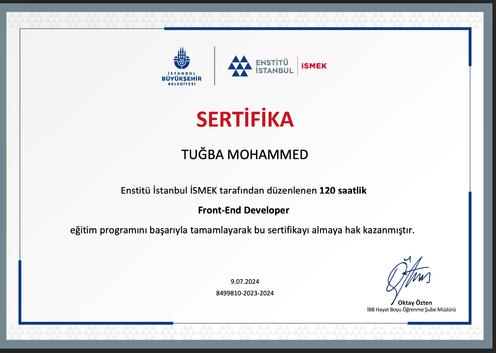
Front End Course
The Institute Istanbul İSMEK (Türkiye)
Istanbul Vocational Training and Adult Education Program
HTML
CSS
JS
BootStrap
09-July-2024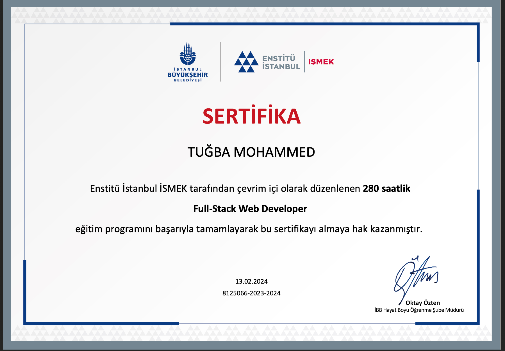
Full Stack Web Developer
The Institute Istanbul İSMEK (Türkiye)
Istanbul Vocational Training and Adult Education Program
ASP.Net, C#, SQL(Queries, procedures, Triggers), Windows Desktop Software, Microsoft Visual Studio
12-March-2024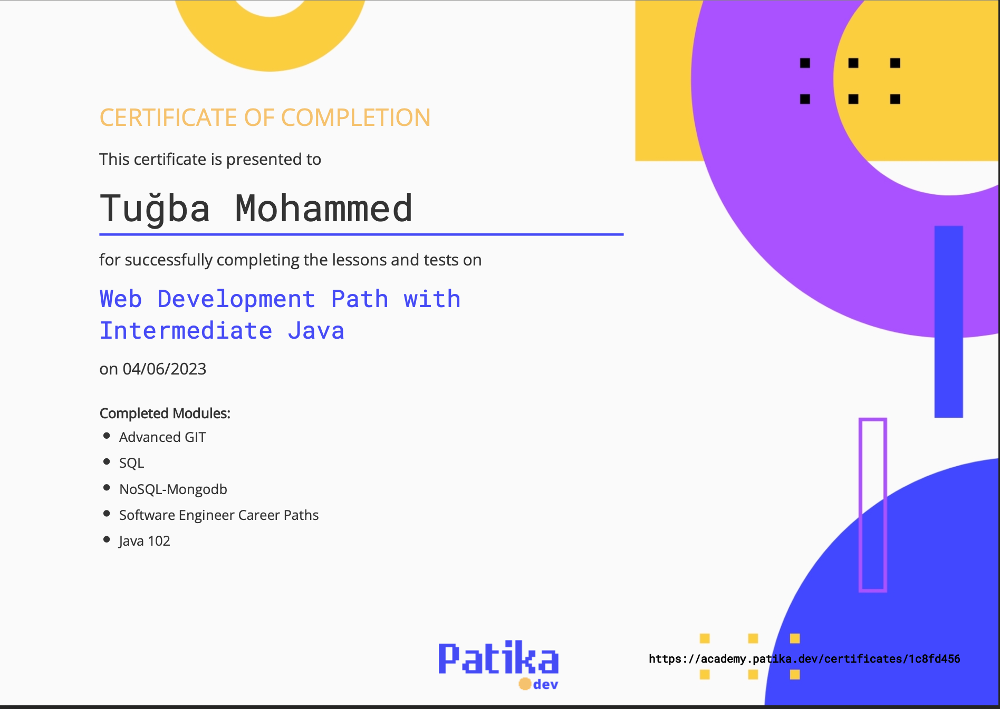
Web Development Path with Intermediate Java
Patika DEV.
Online Software Course(Türkiye)
04-June-2023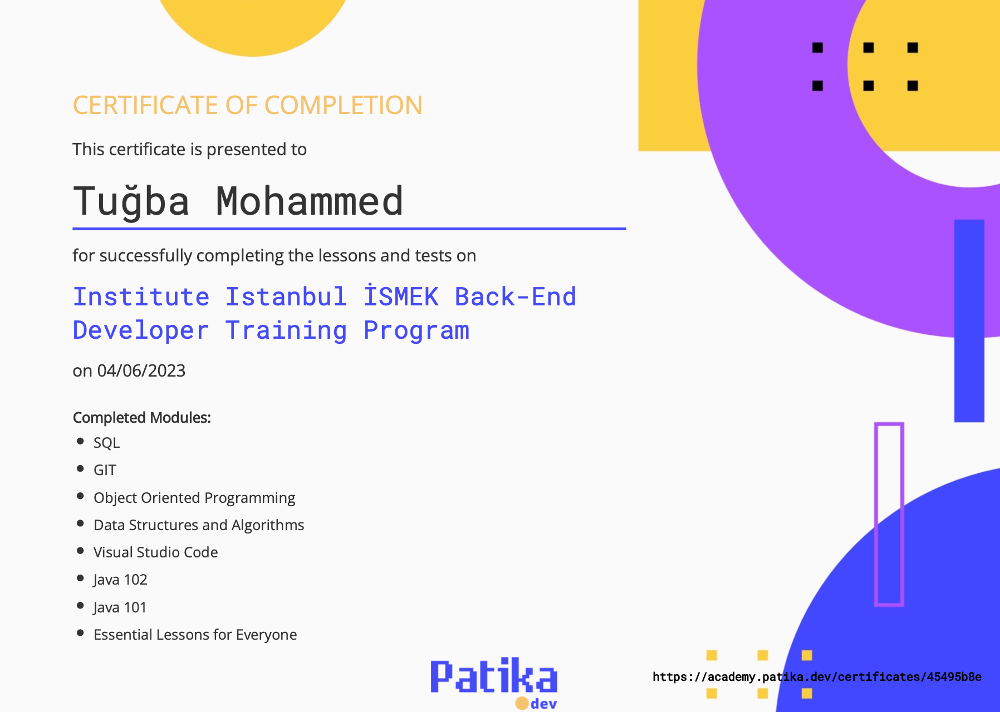
Institute Istanbul İSMEK Back-End Developer Training Program
Patika DEV. X ISMEK Collabration
Online Software Course(Türkiye)
04-June-2023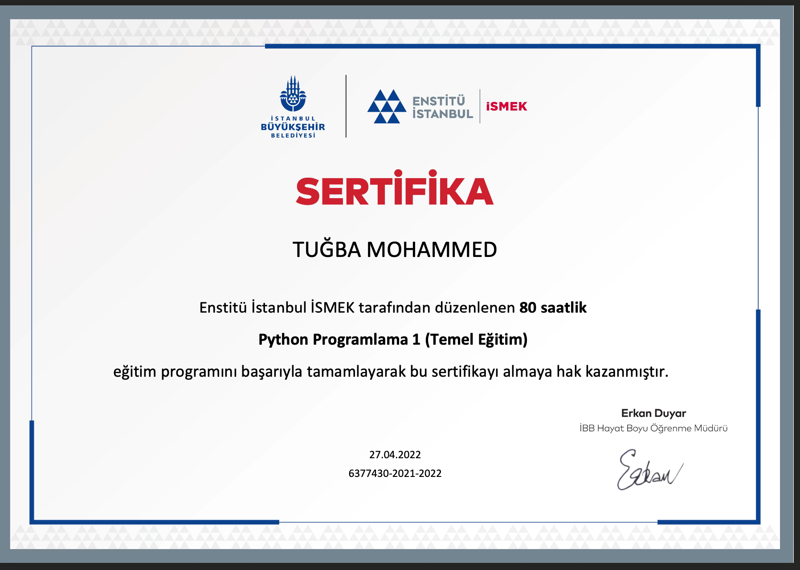
Python Programming
The Institute Istanbul İSMEK (Türkiye)
Istanbul Vocational Training and Adult Education Program
27-April-2022Academic & Technical Training
Formal education and specialized training supporting my research capabilities
🎓 Formal Education
Bachelor of Computer Applications (BCA)
Manipal University Jaipur (Online Mode)
September 2023 - September 2026 (Expected)
CGPA: 3.58/4.0 (4th Semester: 8.7 SGPA)
Key Skills: Programming (Python, Java, C++), Database Management, Web Development, Software Engineering, Data Structures
🔬 Research Methodology (Self-Directed Learning)
Specialization in Research Methods and Statistics in Social Science
University of Amsterdam (Coursera)
January 2026 - June 2026 (In Progress)
Modules: Qualitative Research Methods, Quantitative Research Methods, Basic Statistics, Inferential Statistical Analysis, Final Research Project
Programme: A comprehensive graduate-level specialization delivered by University of Amsterdam faculty across five courses. The instruction team includes Dr. Gerben Moerman (Chair, European Sociological Association Research Network on Qualitative Methods; UvA Lecturer of the Year 2011), Annemarie Zand Scholten (graduate-level instructor in measurement theory and inferential statistics), Dr. Matthijs Rooduijn (postdoctoral researcher, Amsterdam Institute for Inequality Studies), and Dr. Emiel van Loon (Assistant Professor in statistical methodology). The programme covers the philosophical foundations and applied practice of social science research from both qualitative and quantitative traditions — equivalent to university research methods training at graduate level.
Application: Applied directly to WALDEN experimental study design including quasi-experimental methodology, data collection instruments, and statistical analysis plan (paired t-tests, Cohen's d, Mann-Whitney U tests, repeated measures ANOVA). Provides formal methodological foundation for planned n=280 study across government schools in Hyderabad, India.
Research Ethics & IRB Protocols
Self-directed study of research ethics frameworks, informed consent procedures, and institutional review board protocols for human subjects research involving children in educational settings.
Prepared complete IRB documentation for 280-student educational robotics study including parent consent, child assent, data privacy protocols, and risk mitigation strategies.
Academic Writing & Literature Review
Systematic literature review methodology, IEEE conference paper writing, citation management.
Completed systematic review of educational robotics research. Published and presented at IEEE ISEC 2026, Princeton University — to appear in IEEE Xplore.
🤖 Robotics & Hardware Training
Robotic Coding and Designing with Arduino 101-102
İSMEK (Istanbul Metropolitan Municipality)
September 2025 - March 2026 (6 months)
Electrical circuits, breadboards, stepper motors, servo motors, RFID sensors, IR sensors, Bluetooth communication, robotic arm project
💻 Full-Stack Development Training
Full-Stack Web Development Internship
Calanjiyam Consultancies Technology
July - October 2024 (10 weeks)
HTML5, CSS3, JavaScript, PHP, MySQL, RESTful APIs, authentication systems, CRUD operations
Full Stack Web Developer Course
İSMEK
January 2024-March 2024 (3 Months)
ASP.Net, C#, SQL (queries, procedures, triggers), Windows Desktop Software, Microsoft Visual Studio
Back-End Development with PHP
İSMEK
April 2024-July 2024 (3 Months)
PHP, HTML, JavaScript, API development
Front-End Development
İSMEK
April 2024-July 2024 (3 Months)
HTML, CSS, JavaScript, Bootstrap
👨💻 Programming Foundations
Web Development Path with Intermediate Java
Patika DEV
January 2023-June 2023 (6 Months)
Python Programming
İSMEK
February 2022-April 2022 (2 Months)